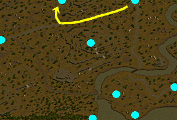
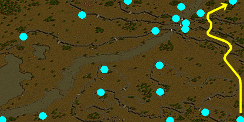

限界突破効果
基本情報限界突破1
限界突破2
限界突破3
限界突破4
限界突破5
<称号効果>
- 物理ダメージ制限 [3000~30000]増加
- 魔法ダメージ制限を超過した数値の [8~56]％分、ダメージ適用
<説明>
- 物理・魔法ダメージの最大値増加
- ※無補正時は物理・魔法共に限界ダメージは20000です。
クエストアイテム「祈りのかけら」を自分のレベル±50のモンスターを狩ることで(ドロップ率約1%)一定数集めて称号を得るのがメイン。
知識の場合、20000 + [ダメージ - 20000] * [n]％で計算されます。
例えば、与えた元ダメージが6万の場合は、以下のように最終ダメージ補正が掛かります。
* 1凸 2万 + 4万 * 0.08 = 23200
* 2凸 2万 + 4万 * 0.16 = 26400
* 3凸 2万 + 4万 * 0.24 = 29600
* 4凸 2万 + 4万 * 0.32 = 32800
* 5凸 2万 + 4万 * 0.36 = 34400
ダメージが2万未満の場合、与ダメージに変化はありません。
補足
・祈りのカケラは銀行保管可能、同一ID内の別キャラクターへ渡すことも可能。・祈りのカケラは200個まで重ね置き可能。
・ダメージの最大値増加はペットや召喚獣にも適用されます。
・限界突破クエストを受諾中でも転生クエストを受諾、転生完了できます。
・祈りのカケラ集めクエストを一旦キャンセル、宝玉を破壊した場合でも、
妖精の泉/長老妖精の木から新しい宝玉をもらい直すことでクエストを継続/再開できます。
・王の証書で限界突破称号Lvを上げることはできません。
・「祈りのカケラ探索機」(30日)、「ミニ祈りのカケラ探索機」(7日)などを使うことで祈りのカケラのドロップ率を向上できます。
・※REDSTONE探索機と異なり、同時に出しても効果は重複しません。
・代わりに祈りのカケラキット[1時間版]を使うことでドロップ率を2倍にできます。
・上位アイテムとして、キャンペーンとして祈りのかけら探索機DX(150%UP)や、 祈りのかけら探索機ULT(200%UP)などもあります。
| 称号効果 | ||||||||||
|---|---|---|---|---|---|---|---|---|---|---|
| 称号Lv | 1 | 2 | 3 | 4 | 5 | 6 | 7 | 8 | 9 | 10 |
物理ダメージ制限増加 |
3000 | 6000 | 9000 | 12000 | 15000 | 18000 | 21000 | 24000 | 27000 | 30000 |
魔法ダメージ制限を超過した数値の％分、ダメージ適用 |
8 | 16 | 24 | 32 | 36 | 40 | 44 | 48 | 52 | 56 |
| 必要Lv | 200 | 300 | 400 | 500 | 900 | - | - | - | - | - |
| 必要な祈りのカケラ | 200 | 400 | 1000 | 1500 | 1500 | - | - | - | - | - |
| 必要な祈りのカケラ 2020/10/28～ |
200 | 300 | 500 | 1500 | 1500 | - | - | - | - | - |
限界突破1
| 毒気 1 | |
|---|---|
農村ガリムトのイリアから、ポイズンワームを狩り、薬に使用する猛毒服の採取を頼まれた。ポイズンワームの巣穴を捜して、ポイズンワーム誘導剤を振り撒けば、ポイズンワームが現われるらしい。ポイズンワームの巣穴は、ガディウス大砂漠 / リンケン北部地域の北西の方角、ガーゴイルたちが集まっているあたりで目撃されるらしい。 ポイズンワームから、ポイズンワームの猛毒袋の入手に成功した。農村ガリムトのイリアのところに戻ろう。 イリアは、バルザンと言う魔法師に薬の調合を頼むという。イリアの依頼書を魔法都市スマグにいるバルザンに渡そう。 |
|
| 受諾場所 | 農村ガリムト イリア(59.102) |
| 受諾条件 | Lv200 |
| 報酬 | 経験値15万 |
| ガディウス大砂漠 / リンケン北部地域 | 巣穴(25.49)をクリック ポイズンワーム(Lv200)が出現、倒す。HP90％のダメージを受ける。  |
| 農村ガリムト | イリアへ |
| 魔法都市スマグ | バルザン(13.62)へ |
| 毒気 2 | |
|
バルザンから、イリアに頼まれた薬を調合している間に、オアシス都市アリアンのライディンという人物について調査してくるように言われた。オアシス都市アリアンに行って、ヘックスという老人にライディンのことを聞いてみよう。 その昔、狂戦士と呼ばれた傭兵ライディンに関する情報を手に入れた。そして、彼を知る1人の女性の名前も教えてもらった。魔法都市スマグのバルザンのところに戻って調査結果を報告しよう。 イリアが本気なのか疑っているバルザン。バルザンは、自分が調合した薬を使ってイリアの真意を確かめるという。調合された怪しい薬を農村ガリムトのイリアに届けよう。 イリアは、自分の兄を殺したライディンに毒薬を飲ませるという。ライディンは、ファウンティンス・ハイランドに隠居しているらしい。 バルザンが調合した薬を飲んで倒れたライディンからライディンのネックレスを手に入れた。農村ガリムトのイリアのところに証拠として持って行こう。 長い間、許しと復讐との間で悩み続けたイリア。しかし、これからは前を向いて歩いて行くと決心したようだ。ファウンティンス・ハイランドにいるライディンにイリアの手紙を渡そう。 |
|
| 受諾場所 | 魔法都市スマグ バルザン(13.62) |
| 受諾条件 | Lv200 |
| 報酬 | 経験値75万 |
| オアシス都市アリアン | ヘックス(17.37)へ |
| 魔法都市スマグ | バルザンへ |
| 農村ガリムト | イリア(59.102)へ |
| ファウンティンス・ハイランド |
◆ライディン(267.25)へ 鉱山町ハノブ←↑↑↑     |
| 農村ガリムト | イリアへ |
| ファウンティンス・ハイランド | ライディンへ ここで一旦クエスト情報欄の表示がなくなるが、バルザンに話すと続きを受諾できる。 |
| 秘められし力 1 | |
ポイズンワームとの戦いで感じた不思議な力。バルザンは、ライディンなら、その力の正体が分かるだろうという。ファウンティンス・ハイランドのライディンを訪ねてみよう。 ライディンは、人間の潜在能力に関して教えてくれた。グレートマウンテン北部にある妖精の泉に、秘められた力の答えがあるという。妖精の泉の近くに住む妖精たちを訪ねて、ライディンとイリアの話を聞かせよう。 ライディンとイリアの話を聞いた泉の妖精は満足したようだったが、もう1つ要求してきた。すぐに妖精たちが喜ぶキャンディーを持って行かなければならない。まずは、ファウンティンス・ハイランドのライディンのところに戻って状況報告をしよう。 ライディンは、キャンディーには詳しくないから分からないという。農村ガリムトにいるイリアを訪ねて、妖精たちが好きなキャンディーについて聞いてみよう。 |
|
| 受諾場所 | 魔法都市スマグ バルザン(13.62) |
| 受諾条件 | Lv200 |
| 報酬 | 経験値10万 |
| ファウンティンス・ハイランド | ライディン(267.25)へ |
| グレートマウンテン北部 | 妖精の泉(37.174)をクリック |
| ファウンティンス・ハイランド | ライディンへ |
| 農村ガリムト | イリア(59.102)へ |
| 秘められし力 2 | |
バルザンなら、妖精たちが好きなキャンディーについて知っているはずだという。魔法都市スマグにいるバルザンを訪ねよう。 バルザンは、妖精たちの口に合わせるためには、妖精の蜜という特別な材料を手に入れる必要があるという。ハンヒ山脈 / ドレム川付近にある枯れ木の節々から摂取できるらしい。妖精の蜜を20個集めたら、農村ガリムトのイリアのところに持って行こう。 妖精の蜜を20個集めた。農村ガリムトのイリアのところに持って行こう。 イリアに妖精のキャンディーを作ってもらった。グレートマウンテン北部の妖精の泉に持って行こう。 |
|
| 受諾場所 | 農村ガリムト イリア(59.102) |
| 受諾条件 | Lv200 |
| 報酬 | 経験値70万 |
| 魔法都市スマグ | バルザン(13.62)へ |
| ハンヒ山脈 / ドレム川付近 | 木をクリック (0.97)(8.51)(10.106)(11.95)(19.103)(20.82)(23.136)(29.112)(33.24)(37.66)(39.111)(53.64)(137.187)(138.167)(143.238)(146.190)(147.199)(163.241) の18箇所あるが、2分経つと再度クリックできる。 ※ミラーダンジョンの木も反応します。 フェアリーズビーベルをクリアすると購入できるハニー・オブテインを所持していると、妖精の蜜の入手確率が上昇。  |
| 農村ガリムト | イリアへ |
| グレートマウンテン北部 | 妖精の泉(37.174)をクリック |
| 秘められし力 3 | |
泉の妖精たちから祝福を受けるには、妖精の力を借りてモンスターを倒すことで手に入る祈りのカケラが必要だという。祈りのカケラ 200個を手に入れて、妖精の泉に持って行こう。カケラが手に入る場所は、妖精の宝玉が教えてくれる。 妖精の祝福を受けるために必要な祈りのカケラをすべて集めた。グレートマウンテン北部にある妖精の泉に戻って、妖精から祝福を受けよう。 |
|
| 受諾場所 | グレートマウンテン北部 妖精の泉(37.174) |
| 受諾条件 | Lv200 |
| 報酬 | 経験値350万 限界突破Lv1 |
| グレートマウンテン北部 | 祈りのカケラ200個を集める ※2018/6/27以前の狩場・モンスターが指定されている妖精の宝玉を所持している場合は、一度破壊してから再度もらい直すこと。  妖精の泉をクリック |
限界突破2
| くじけぬ心 1 | |
|---|---|
古都ブルンネンシュティグにいるテッドという男の子が、頼れる冒険家を探しているから行って来てほしいとバルザンに頼まれた。テッドに会って、彼の話を聞いてみよう。 マリーという友達を驚かせるために、特製の薬を作りたいテッド。ルリリバー / 川河口にいるリーチと淡水亀を倒して、乾燥リーチ 20個と淡水亀の肉 10個を手に入れよう。必要なだけ集めたら魔法都市スマグにいるバルザンの所に持って行こう。 古都ブルンネンシュティグのテッドのところに、テッドの不思議な水薬を配達しよう。 薬を受け取ったテッドは、依頼料がまだ準備できてないらしい。支払いが遅れると魔法都市スマグのバルザンに伝えに行こう。 何かあったのか、バルザンはとても元気が無い。彼は、低く落ちた声でテッドのところに戻って、彼の頼みを聞いてあげてほしいという。古都ブルンネンシュティグのテッドのところに戻ろう。 |
|
| 受諾場所 | 魔法都市スマグ バルザン(13.62) |
| 受諾条件 | Lv300 |
| 報酬 | 経験値100万 |
| 古都ブルンネンシュティグ | テッド(135.40)へ |
| ルリリバー / 川河口 | リーチ(Lv75)と淡水亀(Lv72)を倒す |
| 魔法都市スマグ | バルザンへ |
| 古都ブルンネンシュティグ | テッドへ |
| 魔法都市スマグ | バルザンへ |
| 古都ブルンネンシュティグ | テッドへ |
| くじけぬ心 2 | |
何かのアクセサリーでも作るつもりなのか、色々な種類の貝を集めてくるようテッドに頼まれた。星型の貝 3個と三角の貝 10個と丸い貝 10個が必要だという。3種類の貝は、南フォーリンロード / シュトラセラト西部地域の海岸で岩の下を探してみると見つかるらしい。材料がすべて集まったら、古都ブルンネンシュティグのテッドのところに持って行こう。 どういう風の吹き回しなのか、テッドは、必ず自分の手でアクセサリーを完成させたいらしい。上手に完成するまで、材料を集めてくる必要がある。1回作るのに必要な材料は、星型の貝 3個、三角の貝 10個、丸い貝 10個だ。3種類の貝は、南フォーリンロード / シュトラセラト西部地域の海岸で岩の下を探してみると見つかるらしい。材料がすべて集まったら、古都ブルンネンシュティグのテッドのところに持って行こう。 ついにテッドが貝で作った首飾りが完成した。テッドに声をかけてみよう。 苦労して首飾りが完成したのに、何故かテッドは元気がない。テッドの依頼が完了したので、お小遣いをためて用意した依頼料をバルザンのところに持って行くように言われた。魔法都市スマグにいるバルザンのところに戻って、テッドの依頼料を渡そう。 バルザンから、泉の妖精にテッドとマリーの話を聞かせるように言われた。グレートマウンテン北部にある妖精の泉に行ってみよう。 |
|
| 受諾場所 | 古都ブルンネンシュティグ テッド(135.40) |
| 受諾条件 | Lv300 |
| 報酬 | 経験値150万 |
| 南フォーリンロード / シュトラセラト西部地域 | 岩をクリック ☆星型の貝は(46.27)(71.268)(78.120)(91.184)の4箇所 △三角の貝は(34.42)(43.12)(67.60)(77.140)(79.58)(93.215)の6箇所 ○丸い貝は(58.28)(63.296)(76.299)(82.243)(86.187)(99.294) の6箇所あるが、少し時間が経つと何度でもクリックできる。 
|
| 古都ブルンネンシュティグ | テッドへ フェアリーズビーベルをクリアすると購入できるインストラクション・スティックを所持していると、首飾りの完成確率が上昇。 首飾りの製作に失敗した場合は、再び貝を集めて、テッドへ |
| 魔法都市スマグ | バルザン(13.62)へ |
| グレートマウンテン北部 | 妖精の泉(37.174)をクリック |
| くじけぬ心 3 | |
泉の妖精たちから祝福を受けるには、妖精の力を借りてモンスターを倒すことで手に入る祈りのカケラが必要だという。祈りのカケラ 300個を手に入れて、妖精の泉に持って行こう。カケラが手に入る場所は、妖精の宝玉が教えてくれる。 妖精の祝福を受けるために必要な祈りのカケラをすべて集めた。グレートマウンテン北部にある妖精の泉に戻って、妖精から祝福を受けよう。 |
|
| 受諾場所 | グレートマウンテン北部 妖精の泉(37.174) |
| 受諾条件 | Lv300 |
| 報酬 | 経験値950万 限界突破Lv2 |
| グレートマウンテン北部 | 祈りのカケラ300個を集める ※2020/10/28以前は400個必要でした。 ※2018/6/27以前の狩場・モンスターが指定されている妖精の宝玉を所持している場合は、一度破壊してから再度もらい直すこと。 妖精の泉をクリック |
限界突破3
| 幽霊の遊戯 1 | |
|---|---|
魔法都市スマグにいるベイムの依頼。生前、大変な鬼ごっこマニアだったというベイムのお父さんは、死後も幽霊となって、道行く人を捕まえては鬼ごっこしようとしているらしい。これ以上、人に迷惑をかける前に、幽霊になってしまったベイムのお父さんの鬼ごっこへの未練を晴らしてあげよう。ベイムパパは、ヘムクロス高原 / 高原南部地域にいるらしい。 ベイムパパの話では、鬼ごっこをして10回負けると未練が断ち切れるらしい。ベイムパパは、バヘル台地 / エルベルグ山脈西部地域にいる偽パパとまったく同じ姿をして隠れている。間違って他のゴーストを捕まえてしまうと罰があるらしいので気を付けよう。 ベイムパパの話では、鬼ごっこをして10回負けると未練が断ち切れるらしい。ベイムパパは、鉄の道 / ハノブ入口付近にいる偽パパとまったく同じ姿をして隠れている。間違って他のゴーストを捕まえてしまうと罰があるらしいので気を付けよう。 ベイムパパに、10回勝利した。ヘムクロス高原 / 高原南部地域にいるベイムパパのところに行こう。 ベイムパパは、現世の呪縛を解き放って、あの世に旅立つという。魔法都市スマグのウィザードギルドにいるベイムに、ベイムパパのことを伝えよう。 ベイムは、ベイムパパに必ず伝えなければならないことがあると言う。ヘムクロス高原 / 高原南部地域にいるベイムパパに、少しの間だけ待ってほしいと伝えよう。 |
|
| 受諾場所 | 魔法都市スマグ ウィザードギルド ベイム(16.20) |
| 受諾条件 | Lv400 |
| 報酬 | 経験値150万 |
| ヘムクロス高原 / 高原南部地域 | ベイムパパ(59.11)へ |
| 鉄の道 / ハノブ入口付近 | ▲変装幽霊パパ(Lv37)を倒す (沸き10体程度、リポップ10秒) フェアリーズビーベルをクリアすると購入できる鬼神煌足を所持していると、鬼ごっこに勝つ確率が上昇。 失敗すると状態異常にかかる。  |
| ヘムクロス高原 / 高原南部地域 | ベイムパパへ |
| ウィザードギルド | ベイムへ |
| ヘムクロス高原 / 高原南部地域 | ベイムパパへ |
| 幽霊の遊戯 2 | |
|
ベイムの伝言を伝えるために戻ったら、ベイムパパの様子がおかしい。何かに押えつけられているようで酷く苦しそうだ。急いで魔法都市スマグのウィザードギルドにいるベイムに知らせよう。 ベイムパパは、長年の間にスウェブタワーの魔力の影響を受けて、悪霊となった魂に捕らわれているらしい。地縛霊に吸収されてしまう前に、悪霊退散具でベイムパパに取り付いている地縛霊を引き剥がして退治しよう。一度に引き剥がすことは難しいため、少なくとも 5回は繰り返して悪霊を退治しなければいけない。悪霊退散具を持って、ヘムクロス高原 / 高原南部地域にいるベイムパパに声をかけよう。 なんとか、すべての地縛霊を引き剥がすことができたようだ。地縛霊から解放されたベイムパパの無事を確認しよう。 |
|
| 受諾場所 | ヘムクロス高原 / 高原南部地域 ベイムパパ(59.11) |
| 受諾条件 | Lv400 |
| 報酬 | 経験値150万 |
| ウィザードギルド | ベイム(16.20)へ |
| ヘムクロス高原 / 高原南部地域 | ベイムパパへ 地縛霊(Lv400)Zinが出現、倒す。2分湧き。混乱させると更新されない。 5回成功するまで繰り返す。 カウント率60%程度。PTでのカウントも可。(一度アップしたPTはカウントされないので組みなおしの必要あり) リポップでの短縮不可。 
ベイムパパへ |
| 幽霊の遊戯 3 | |
なんとか、すべての地縛霊を引き剥がすことができたようだ。地縛霊から解放されたベイムパパの無事を確認しよう。 地縛霊から解放されたベイムパパは、幸いにも凄く元気そうだ。魔法都市スマグのウィザードギルドで大変心配しているベイムに報告してあげよう。 自分も一人の親になって、いつも息子と一緒にいたお父さんの気持ちが分かってきたというベイム。お父さんへの感謝の思いがつまったベイムのプレゼントをベイムパパに届けよう。 ベイムパパは、ベイムがプレゼントしてくれたパズルに釘づけだ。初めて鬼ごっこをした時の自分の思いが今の息子から感じられると、凄く喜んでいる。心が親子の愛で満たされ、あの世に旅立つという彼の言葉をベイムに伝えよう。 バルザンが、ベイムに不要なパズルのピースをお礼として渡すように言った理由は1つしかなさそうだ。貰った不要なパズルのピースを持ってグレートマウンテン北部にある妖精の泉を訪ねよう。 |
|
| 受諾場所 | ヘムクロス高原 / 高原南部地域 ベイムパパ(59.11) |
| 受諾条件 | Lv400 |
| 報酬 | 経験値200万 |
| ヘムクロス高原 / 高原南部地域 | ベイムパパへ |
| ウィザードギルド | ベイム(16.20)へ |
| ヘムクロス高原 / 高原南部地域 | ベイムパパへ |
| ウィザードギルド | ベイムへ |
| グレートマウンテン北部 | 妖精の泉(37.174)をクリック |
| 幽霊の遊戯 4 | |
泉の妖精たちから祝福を受けるには、妖精の力を借りてモンスターを倒すことで手に入る祈りのカケラが必要だという。祈りのカケラ 500個を手に入れて、妖精の泉に持って行こう。カケラが手に入る場所は、妖精の宝玉が教えてくれる。 妖精の祝福を受けるために必要な祈りのカケラをすべて集めた。グレートマウンテン北部にある妖精の泉に戻って、妖精から祝福を受けよう。 |
|
| 受諾場所 | グレートマウンテン北部 妖精の泉(37.174) |
| 受諾条件 | Lv400 |
| 報酬 | 経験値1650万 限界突破Lv3 |
| グレートマウンテン北部 | 祈りのカケラ500個を集める ※2020/10/28以前は1000個必要でした。 ※2018/6/27以前の狩場・モンスターが指定されている妖精の宝玉を所持している場合は、一度破壊してから再度もらい直すこと。 妖精の泉をクリック |
限界突破4
| 不思議な噴水と新たな祝福 1 | |
|---|---|
いつからか、スマグ中央広場のプロテリング噴水に関する噂がスマグ全域に広がった。カラのお願い通り、プロテリング噴水を調べてみよう。 スマグ名物プロテリング噴水は、詐欺師のような口ぶりで人々を騙していた。噴水に関する情報をカラに伝えよう。 カラは、人々が噴水を称えるのを見て、よくない予感がすると言った。噴水に憑かれている邪悪な存在を浄化するために、先代から伝わっている聖物の力を取り戻す必要があるという。神聖都市アウグスタ地下にいる隠された収容所の深い所から貪欲の結晶を探してみよう。 貪欲の結晶を手に入れた。カラに伝えよう。 貪欲の結晶のエネルギーは安定化させているが、この状態では結晶の力をコントロールできない。呪いを受けたミズナの洞窟/泉の水に生息するマゴットと、殺人蚊の群れからマゴットの体液50個と殺人蚊の群れの死骸25個を集めよう。 漆黒の魔石を作るための材料は全て揃った。カラの所に戻って漆黒の魔石を完成させ、聖物の力を取り戻そう。 |
|
| 受諾場所 | 魔法都市スマグ カラ(81.71) |
| 受諾条件 | Lv500 キャンセル不可 |
| 報酬 | 経験値200万 |
| 魔法都市スマグ | 噴水(41.22)をクリック カラへ |
| 隠された収容所 | 極悪の殺人鬼(Lv500)Zin、恐怖の殺人鬼(Lv500)Zinを倒す |
| 魔法都市スマグ | カラへ |
| 呪いを受けたミズナの洞窟 / 泉の水 | マゴット(Lv525)、殺人蚊の群れ(Lv523)を倒す |
| 魔法都市スマグ | カラへ |
| 不思議な噴水と新たな祝福 2 | |
やっと聖物が持っていた力を取り戻した。中央広場にいるプロテリング噴水に行って、噴水の正体を明かそう。 噴水に憑かれていたのは、邪悪な悪霊だった。悪霊は聖物の力を恐れて、どこかに消えてしまった。カラにこの事実を伝えて、消えた噴水の悪霊を探す方法について聞いてみよう。 カラが悪霊の痕跡を調べた結果によると、噴水の悪霊は隠された収容所に隠れているという。隠された収容所に行って、そこに隠れている噴水の悪霊を探し出そう。 噴水の悪霊が分身を作り出し攻撃し始めた。悪霊の分身を退治し噴水の悪霊を制圧しよう。 噴水の悪霊を制圧した。噴水の悪霊と話して、これ以上人々を苦しめないように言い聞かせよう。 もう噴水の悪霊が人々を苦しめることはないはず。カラにこの事実を伝え、悪霊が話した第四の祝福について聞いてみよう。 |
|
| 受諾場所 | 魔法都市スマグ カラ(81.71) |
| 受諾条件 | Lv500 キャンセル不可 |
| 報酬 | 経験値200万 |
| 魔法都市スマグ | 噴水(41.22)をクリック カラへ |
| 隠された収容所 | 噴水の悪霊(96.134)へ 悪霊の分身(Lv500)Zinが出現、60秒以内に倒す 噴水の悪霊へ |
| 魔法都市スマグ | カラへ |
| 不思議な噴水と新たな祝福 3 | |
カラに噴水の悪霊が話した第四の祝福について聞いてみたら、バルザンに聞いてみることを勧められた。バルザンに要請の第四の祝福について聞いてみよう。 バルザンは、第四の祝福のことは分からないが、祝福を授ける妖精自身なら知っているだろうと言った。グレートマウンテン北部の妖精の泉に行って、第四の祝福について聞いてみよう。 妖精たちは、長老妖精なら知ってるかもしれないと言った。グレートマウンテン北部の長老妖精が住んでいる長老妖精の木を探し、第四の祝福について聞いてみよう。 |
|
| 受諾場所 | 魔法都市スマグ カラ(81.71) |
| 受諾条件 | Lv500 キャンセル不可 |
| 報酬 | - |
| 魔法都市スマグ | バルザン(13.62)へ |
| グレートマウンテン北部 | ○妖精の泉(37.174)をクリック ○長老妖精の木(77.246)をクリック  |
| 不思議な噴水と新たな祝福 4 | |
以前よりも大きい力を引き出すため、祈りのカケラ10個で作ることができる夢のカケラというものが必要だ。夢のカケラ150個を集めて長老妖精の木に戻ろう。祈りのカケラがどこで現れるのかは、妖精からもらった長老妖精の宝玉から確認でき、集めた祈りのカケラを長老妖精に持って行くと、夢のカケラを作ってもらえる。 第四の祝福を受けるのに必要な夢のカケラを全部集めた。長老妖精の木に声をかけ、長老妖精から第四の祝福を受けよう。 |
|
| 受諾場所 | グレートマウンテン北部 長老妖精の木(77.246) |
| 受諾条件 | Lv500 |
| 報酬 | 経験値2880万 限界突破Lv4 |
| グレートマウンテン北部 | 祈りのカケラ1500個を集め、夢のカケラ150個を作る 祈りのカケラ10個で夢のカケラ1個を作成できる。  妖精研究家の発明品をクリアすると購入できるヴィンスの錬金術箱を所持していると、 祈りのカケラ7個で夢のカケラ1個を作成できる。ただし、失敗すると祈りのカケラは消滅する。  長老妖精の木をクリック 夢のカケラ150個目を作る際には、インベントリ内に150個全てを所持していないと更新不可。 銀行に保管しておいた夢のカケラ150個をまとめて渡しても、クエスト完了できない。 |
限界突破5
| ある錬金術師の研究 | |
|---|---|
|
関連モンスター
捨てられた地下墓地B1 装甲ボーンキメラ 腐った骨 30個 クエスト情報 魔法都市スマグの見習い錬金術師アンジの依頼で研究材料を集めることになった。アンジに頼まれた材料 腐った骨は捨てられた地下墓地B1の 装甲ボーンキメラから手に入れることができる。 関連NPC 魔法都市スマグ アンジ クエスト情報 魔法都市スマグの見習い錬金術師 アンジのところに戻ろう。 |
|
| 受諾場所 | 魔法都市スマグ アンジ(25.66) |
| 受諾条件 | Lv 900～9999 キャンセル不可 |
| 報酬 | - |
| 魔法都市スマグ | アンジへ |
| 捨てられた地下墓地B1 | 装甲ボーンキメラ(Lv900-925)Zinを倒して 研究の材料である腐った骨を３０個手に入れる。 |
| 魔法都市スマグ | アンジへ |
| ロセティの遺品 | |
|
関連NPC
砂風酒場 バーテン クエスト情報 魔法都市スマグの見習い錬金術師アンジの依頼でロセティ―の遺品探しを手伝うことになった。まずはアリアンの砂風酒場のバーテンを訪ねよう。 クエスト情報 酒場の左側の壁にある飾り棚を調べて、ロセティ―の遺品を探そう。 関連NPC 魔法都市スマグ アンジ クエスト情報 ロセティーの遺品を見つけた。魔法都市スマグの見習い錬金術師 アンジのところに戻ろう。 |
|
| 受諾場所 | 砂風酒場 バーテン(81.71) |
| 受諾条件 | Lv900 キャンセル不可 |
| 報酬 | - |
| オアシス都市アリアン |
バーテンダーと話す 棚(4,14)をクリック  魔法都市スマグ アンジへ |
| 錬金術師の悲哀 | |
|
関連モンスター
荒野の要塞入口 汚染大骸骨 魂の水晶玉 1個 クエスト情報 魔法都市スマグの見習い錬金術師 アンジの依頼で研究材料を集めることになった。アンジに頼まれた材料 魂の水晶玉はブラックファイヤー荒野の要塞入口の 汚染大骸骨から手に入れることができる。 関連NPC 魔法都市スマグ アンジ クエスト情報 必要な材料が揃った。魔法都市スマグの見習い錬金術師 アンジのところに戻ろう。 関連モンスター 荒野の要塞入口 汚染大骸骨 魂の水晶玉 1個 クエスト情報 アンジからもう一度 魂の水晶玉の収集を頼まれた。一体アンジはどんな研究をしているのだろう？彼は何か隠している様子だが、再びブラックファイヤー荒野の要塞入口に行き、 汚染大骸骨を退治して 魂の水晶玉を手に入れよう。 関連NPC 魔法都市スマグ アンジ クエスト情報 必要な材料が揃った。魔法都市スマグの見習い錬金術師 アンジのところに戻ろう。 関連モンスター 荒野の要塞入口 汚染大骸骨 魂の水晶玉 1個 クエスト情報 錬金術師の研究は失敗が続いている。アンジからまた 魂の水晶玉の収集を依頼された。最後にもう一度ブラックファイヤー荒野の要塞入口に行き、 汚染大骸骨から材料を手に入れよう。 関連NPC 魔法都市スマグ アンジ クエスト情報 魂の水晶玉を手に入れた。 アンジのところに戻って真実を話してもらおう。 |
|
| 受諾場所 | 魔法都市スマグ アンジ(25.66) |
| 受諾条件 | Lv900 キャンセル不可 |
| 報酬 | - |
| 荒野の要塞入口 | 汚染大骸骨を倒してクエ品(魂の水晶玉)をドロップさせる。 (ドロップ率20%程度) 以下マップの黄点辺りにいる。   |
| 魔法都市スマグ |
アンジへ |
| 荒野の要塞入口 | 汚染大骸骨を倒してクエ品(魂の水晶玉)をドロップさせる。 (ドロップ率10%程度) |
| 魔法都市スマグ |
アンジへ |
| 荒野の要塞入口 | 汚染大骸骨を倒してクエ品(魂の水晶玉)をドロップさせる。 (ドロップ率5%程度) |
| 魔法都市スマグ |
アンジへ |
| 妖精たちが愛する歌姫 | |
|
クエスト情報 魔法都市スマグの見習い錬金術師アンジ曰く、妖精たちから与えてもらう5番目の祝福があるらしい。長老妖精の木を訪ねて長老妖精と話をしてみよう。 関連NPC 魔法都市スマグ アンジ クエスト情報 長老妖精は、歌姫ロセティ―との関係を示す証拠が必要だと言った。アンジのところに戻って相談しよう。 クエスト情報 アンジからロセティーの遺品をもらった。長老妖精にロセティ―が大切にしていた花瓶を渡そう。 |
|
| 受諾場所 | グレートマウンテン北部 長老妖精の木(77.246) |
| 受諾条件 | Lv900 キャンセル不可 |
| 報酬 | 2500万EXP |
| グレートマウンテン北部 (81,261) |
長老妖精の木をクリック。 |
| 魔法都市スマグ |
アンジ(25,66)へ |
| グレートマウンテン北部 (81,261) |
長老妖精の木をクリック。 |
| ５番目の祝福 | |
|
関連アイテム
夢のカケラ 150個 クエスト情報 今までよりさらに大きな力を引き出すには、祈りのカケラ10個で作ることができる 夢のカケラというアイテムが必要だ。 夢のカケラ150個を集めて長老妖精の木に戻ろう。祈りのカケラがどこで現れるのかは、妖精からもらった 長老妖精の宝玉から確認でき、集めた祈りのカケラを長老妖精に持って行くと、 夢のカケラを作ってもらえる。 関連アイテム ひび割れた邪念 10個 クエスト情報 次に、ブラックファイヤーを掌握しているエリアボスモンスターを討伐し、 ひび割れた邪念10個を手に入れて長老妖精の木に戻ろう。 |
|
| 受諾場所 | グレートマウンテン北部 長老妖精の木(77.246) |
| 受諾条件 | Lv900 |
| 報酬 | 経験値2億4000万 限界突破Lv5 |
| グレートマウンテン北部 | 祈りのカケラ1500個を集め、夢のカケラ150個を作る 祈りのカケラ10個で夢のカケラ1個を作成できる。 妖精研究家の発明品をクリアすると購入できるヴィンスの錬金術箱を所持していると、 祈りのカケラ7個で夢のカケラ1個を作成できる。ただし、失敗すると祈りのカケラは消滅する。 長老妖精の木をクリック 夢のカケラ150個目を作る際には、インベントリ内に150個全てを所持していないと更新不可。 銀行に保管しておいた夢のカケラ150個をまとめて渡しても、クエスト完了できない。 |
| グレートマウンテン北部 (81,261) |
長老妖精の木をクリック。 |
| エリアボス (81,261) |
エリアボスよりひび割れた邪念を入手。 シュラグとファルコンのどちらからでも可能。 100%ドロップするとは限らず、ドロップ率は約10%程度。  PTメンバーごとに個別に直接鞄に入るので、カバンをあけておくこと。 |
| グレートマウンテン北部 (81,261) |
長老妖精の木をクリック。 |